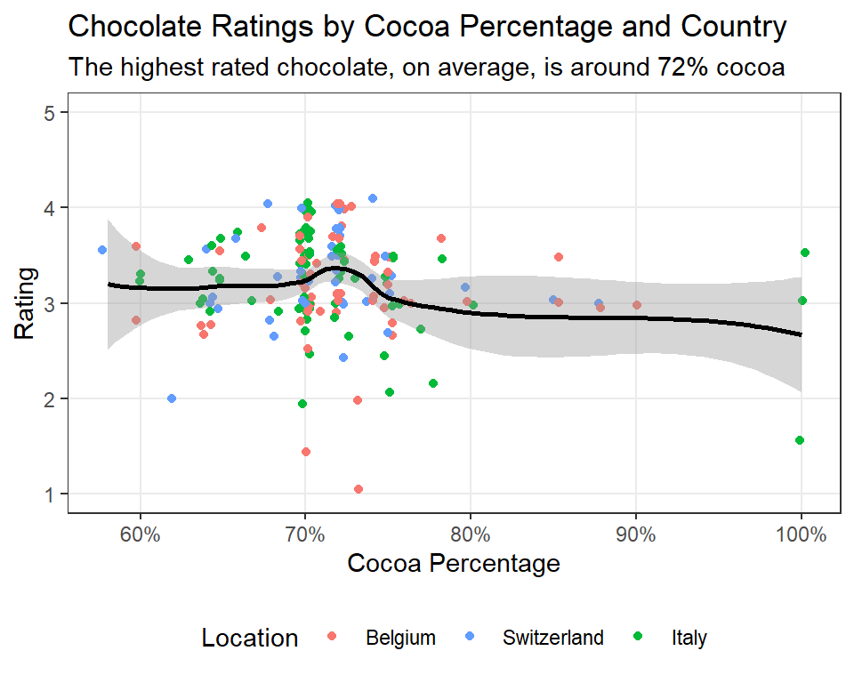

library(tidyverse)
chocoData<-read_csv("chocolate.csv")|>filter(company_location%in%c("Belgium","Switzerland","Italy"))|>print()
plot_cocoa<-ggplot(chocoData,aes(x=cocoa_percent,y=rating,color=company_location))+geom_jitter()+geom_smooth(color="black",linewidth=1)
plot_cocoaWeek 06 Assignment

Instructions
Create a new Quarto document (HTML format), clear out the boilerplate code/text, and use this document to store your answers to each of the six questions below. Be sure to enable embed-resources using the header below. If your answer involves writing text, then use markdown to write 2–4 sentences per question; if you answer involves running code, then use one or more code chunks. For questions that ask you to fix code, correct any errors (while achieving the stated goal) and include only the working code in your document.
---
format:
html:
embed-resources: true
---Please clearly mark which part of your document is answering which question (e.g., using markdown headings) and remove any “scratch work” or failed attempts from your document before submitting it. Finally, note that many essay-style questions will require you to read between the lines and use your imagination (as opposed to just looking up the answer in the lecture).
Question 1
Download the “chocolate.csv” data file from Canvas and add it to your project folder. Then clean up the code chunk below to use the tidyverse style guide.
Also add comments to the code explaining why we used filter (i.e., to focus on only the top three countries on some fictitious chocolate leader board) and why the jitter geom was used here (e.g., instead of the point geom).
Question 2
Copy the styled code from Question 1 that created and printed the plot. In this version of the code, adjust the chunk to suppress the ggplot message about the smoothing method and warning about the missing values.
Also adjust this chunk to “fold” the code (i.e., hide it by default but allow the user to click on “Code” to see it) and make the figure 4 inches tall and 5 inches wide.
Question 3
What do the
evalandechochunk options control? Provide a few examples of a situation in which you would want to set each of these totrueorfalse.Visit the page about Quarto HTML Themes and select a theme to apply to your assignment document. Use any theme except the
defaultone (so that we can clearly see whether it worked).
Question 4
Copy the chunk from Question 2. In this version, modify the code to customize the scales. Set the y-axis limits from 1 to 5 (to reflect the lowest and highest possible scores on the rating scale, respectively).
Also change the order of the company locations (in the legend) to reflect their ranking: Belgium first, then Switzerland, then Italy.
Optional (not graded): Add the following argument to the function that controls the continuous x-axis:
labels = scales::percent. This will transform each break’s label to use the percentage format.
Question 5
Copy the chunk from Question 4. In this version, replace the titles of the x, y, and color scales to be “Cocoa Percent”, “Rating”, and “Location”, respectively.
Also add a title describing what the plot generally depicts and a subtitle that describes which cocoa percentages are the highest ranked across these three countries.
Question 6
Copy the chunk from Question 5. In this version, add the “black and white” or
bwcomplete theme and set the base font size to 11.Also adjust the legend to be positioned at the bottom and remove (i.e., “blank”) the minor grid lines.
Hint:
Your final figure should look something like this.

✅ Done! Please save and then render your document to an HTML file. Check it over to make sure it is complete (and rendered properly) and then upload this file to Canvas by the deadline listed on the syllabus. Note that, if any of your code chunks has an error in it, the HTML file will not render properly (this is why removing scratch work is important).